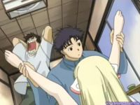
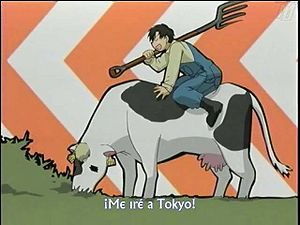
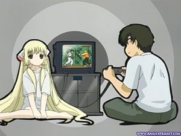

Chobits
 De: La Frikipedia, la enciclopedia extremadamente seria.
De: La Frikipedia, la enciclopedia extremadamente seria.
| De la serie anime para todos:
|
| Chobits
|
| 
|
| Hideki y Shinbo turnándose a Chii
|
|
| Género:
|
Shojo, Ecchi
|
| Episodios:
|
24
|
| Autor del manga:
|
CLAMP
|
| Publicación:
|
2001-2002
|
| Publicado en:
|
Young Magazine
|
| Director del anime:
|
Múrio de azucar
|
| Transmitido en:
|
solo Japón...buuu
|
| Ovas:
|
1
|
| Películas:
|
ninguna
|
| Notas
|
No te enamores de una persocom, a menos que quieras hijos parecidos a Doraemon
|
«¡Chiiiiiiiiiiiiiiiiiiiii!»
~ Chii sobre Chobits.
«Aaaaaaaaaaaaaaaaaaaaaaaaaaaaaaaaaaaaaa»
~ Hideki Motosuwa sobre cualquier cosa.
«¡¡¡Hideki!!!»
~ Chii sobre apuntar con el dedo cualquier cosa.
«¡Hideki Cochino!»
~ Chii sobre una verdad incómoda.
Chobits es un anime hentai creado por CLAMP en colaboración con Bill Gates, que relata la historia de un friki pajillero y visitante de páginas porno que se encuentra a una esclava sexual robótica de quien abusar. La historia ocurre un año despues de Angelic Layer.
Argumento
Hideki Motozuwa viaja para a Tokio desde su rancho subido en burro y bajado del cerro a tamborzazos, para ver si puede entrar a la universidad.
 Hideki de camino a Tokio, le robaron el burro y por eso se va a vaca
En la ciudad se encuentra con las persocoms, que son esclavas sexuales robóticas computarizadas y que con ellas puedes ver páginas guarras sin virus y Hideki tenía ganas de tirarse a una, pero el muy pobretón no tiene ni en que caerse muerto por lo que tuvo que consolarse con Doña Manuela.
De pronto en medio de la calle se halla por casualidad a una persocom que estaba buena y decidió llevársela a su casa para violarla un rato. La persocom estaba apagada y para encenderla el Hideki tuvo que tocarle la entrepierna (ya quisiéramos muchos una oportunidad así) Ella despierta y lo único que responde es con Chii una forma incompleta de decir ¨ ¿Dónde chingados estoy?¨ Por lo que el Hideki decide llamarla así.
Con el tiempo Hideki descubre que no es una persocom normal y que pertenece a una marca de persocoms llamada Chobits la cual tiene la característica de pensar por si misma o sea que no será fácil llevártela a la cama.
Personajes

Hideki haciéndole una guarrada a Chii se le nota por la cara de degenerado
 Muy pronto se harán
Xbox con forma de persocom
- Hideki Motozuwa: un ranchero pervertido pajillero, llega a Tokio para ir a la universidad aun que luego se le olvida de tanto sexo que tiene con Chii. Se encontró con Chii en la basura y desde entonces a podido satisfacer todos su mas prohibidos deseo. Para mantenerse el wey trabaja en una taberna como sexo servidor. Minoru le dijo que no se enamorara de ella porque entonces
sus hijos tendran orejas de dumbo cibernetico ya no funcionara su relación esclava-amo.
- Chii: la persocom de Hideki, el la encontró vendada como si hubieran usado el bondage con ella, y el se la lleva a casa para hacerla su esclava. Ella es un Chobits un persocom que puede pensar por si misma. Realmente su nombre es Elda una chobits creada por el esposo de la Hibiya, Icchan de Angelic Layer, pero su consciente es el de Freya hermana de Elda que tuvo un amorío con sus creador y por eso se las cargaron y ella se mete en el cuerpo de su hermana Elda (ya me hice bolas)
- Freya : la hermana gemela de Chii una gothic lolita que tuvo amoríos con su creador el esposo de Hibiya, cuando las ponen a dormir Elda descargo la consciencia de Freya en su cuerpo y así estar siempre juntas.
- Shinbo Hiromu: es el mejor amigo de Hideki también el es un pajillero de mierda aunque al parecer era gay ya que siempre invitaba a Hideki a los baños para poder verle el pilín. Eso fue hasta que se ligo a su profesora el muy puto. Su esclava es Sumomo.
- Sumomo: la persocom de Shinbo, es de tamaño miniatura y solo sirve para usarse como supositorio aunque el muy cabrón de Shinbo se la regala a Hideki cuando este se liga a la profe dando entender que ya tiene quien le de placer. Ella tiene un sistema de navegación el cual usaron para llegar a la tienda de ropa interior (se ve que Shinbo le daba buen uso)
- Chitose Hibiya: la casera de la casa de Hideki y Shinbo es muy buena (y muy requetebuena) con sus hospedados. Ella fue quien tiro a Chii a la basura para que Hideki la encontrara ya que fue su marido Icchan el que la construyo (y la tiro en la basura por el coraje que le tenía por ponerle los cuernos)
- Ichiro "Icchan" Mihara : el de Angelic Layer aqui esposo muerto de la Hibiya. Creador de las Chobits, porque se cansó de los muñecos pequeños de Angelic Layer y quiso muñecos tamaño real.
- Minoru Kokubunji: un escuincle nerd sabelotodo que es rico y vive en una mansión llena de esclavas sexuales pero el pendejo no toca ninguna solo a Yuzuki la cual el mismo construyo con la imagen de su hermana, Kaede de Angelic Layer, (hasta incestuoso nos salio el güerco) el es quien le dice a Hideki que Chii es una persocom y trata de ayudarlo a descubrir todos los misterios que la rodean (sobre todo para conseguirse una chobits que este tan buena como ella)
- Yuzuki: la persocom de Minoru y creada para que se parezca a la hermana de Minoru, Kaede la de Angelic Layer, saciando así sus deseos incestuosos.
- Takako Shimizu: la profesora de Hideki y Shinbo esta digo es muy buena con sus estudiantes. Después Shinbo se hace su amante y terminan fugándose mandando a todos a la chingada.
- Yumi Oumura: hija del dueño de la taberna donde termina trabajando Hideki como sexo servidor. La chica con las tetas mas grandes en la serie nomás andando echándole el perro a Hideki pero realmente es amante de un panadero loco.
- Kojima Yossoyuki: un nerd (bueno en esta serie si no eres pervertido eres nerd) conocido como en Internet como Bill Gates rapto a Chii para violarla un rato a ver si es una persocom(¡no pudo por gilipollas!). Después junto con Minoru investigan si es una Chobits.
- Kotoko: la cantante que interpreta el opening de Onegai Teacher entre otros, aquí la vemos como la persocom de Kojima, también es una persocom móvil como Sumomo y también solo la usan como supositorio.
- Zimma y Dita: dos tipos que son parodias de Neo y Trinity de Matrix son los núcleos de la Internet cuya misión es violar al ultimo de los Chobits o sea a Chii.
Conceptos
Chii y Freya aparecen como humanas en
Kobato, para deleite de los fans
- Persocom: computadora ambulante con forma de chava cuya función es servirte de esclava sexual y saciar tus mas pervertidos deseos y descargarte todas las paginas porno del mundo y sin ningún virus.
- Persocom móvil: lo mismo que lo anterior pero de tamaño compacto (algo así como una laptop) que sirve para usarse como supositorio-
- Chobits: marca de persocom creada por Windows que tienen la característica de pensar por si misma sin un sistema operativo, ósea que será muy difícil llevártela a la cama.
¿Sabias que?
- Que las persocoms saldrán a la venta en el 2020
- Que Chii y Freya aparecen como humanas en Kobato
- Que Hideki se parece a ti
- Que Norman Bates se parece a Hideki (solo por ser voyeurista y hentai, en lo loco no)
- Que chobits realmente fue creado por Masashi Kishimoto
- Que Shinbo se iba ser gay antes de ligarse con su profesora
- Que Hideki ya lleva muchas vidas perdidas en el Ragnarok
- Que los persocoms tienen entrada al Digimundo
- Que Lain se quiso meter en una persocom
- Que Elfen Lied es una adaptación de la vida real de Chobits
- Que Hideki es un Hoygan de Yahoo Respuestas?
Enlaces externos
Autor(es):
- Frikiman
- Alex2610
- El Sevillano
- Alex el Mono
- Naruto hyuga
- Veni Vidi Vici
- Dark temptation
- SakuraMiya
- HarunnyChan
- Goofy.
Frikipedia 2005-2016, Licencia
GFDL 1.2 - Extraído por FrikiLeaks